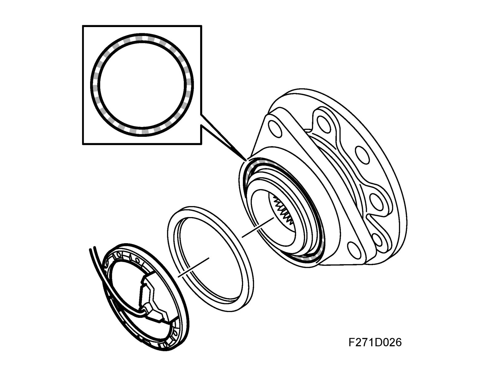
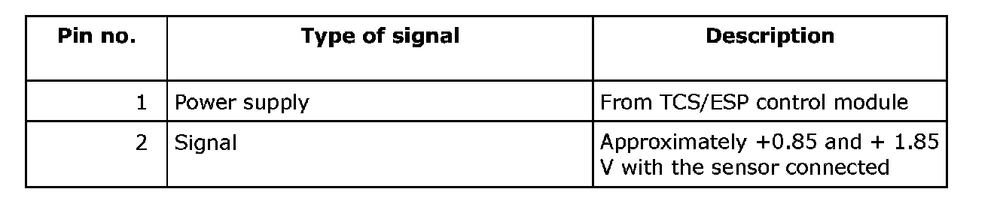
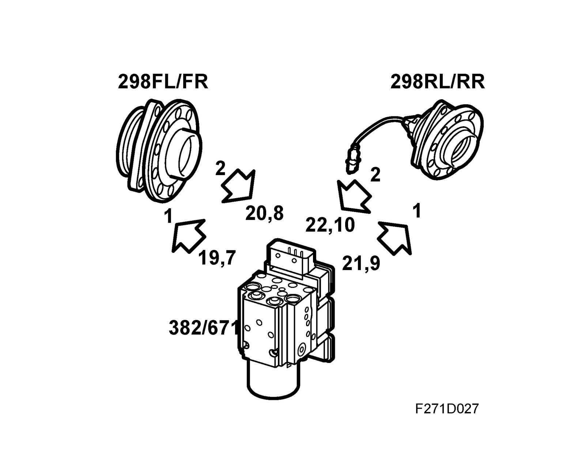
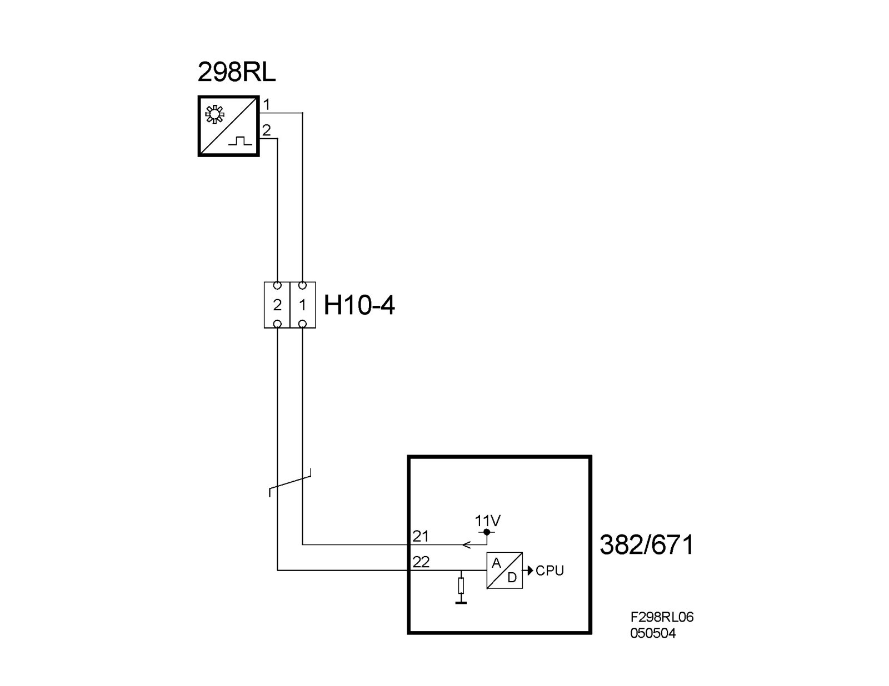
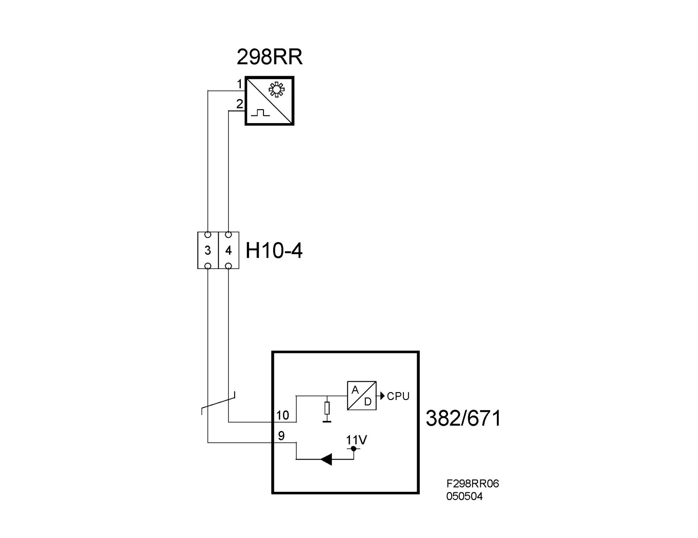

Wheel Speed Sensor, Rear (298RL, RR)
Wheel speed sensor, rear (298RL, RR)Location
Wheel speed sensor, rear left (298RL)
Wheel speed sensor, rear right (298RR)
Main use

To send wheel speed to the TC/ABS or ESP unit.
Type

Two Hall sensors which measure wheel speed using a 48-pole magnetic disc, which provides 48 pulses per rotation.
The Hall sensor sends a square pulse with a 50% pulse-rate.
The control module uses the frequency to calculate wheel speed; by measuring variation in current consumption, the frequency can be measured. The frequency increases with a corresponding increased wheel speed from 0 to 2000 Hz.
Connection (not for control module)

^ Overview

^ 298 RL

^ 298 RR
